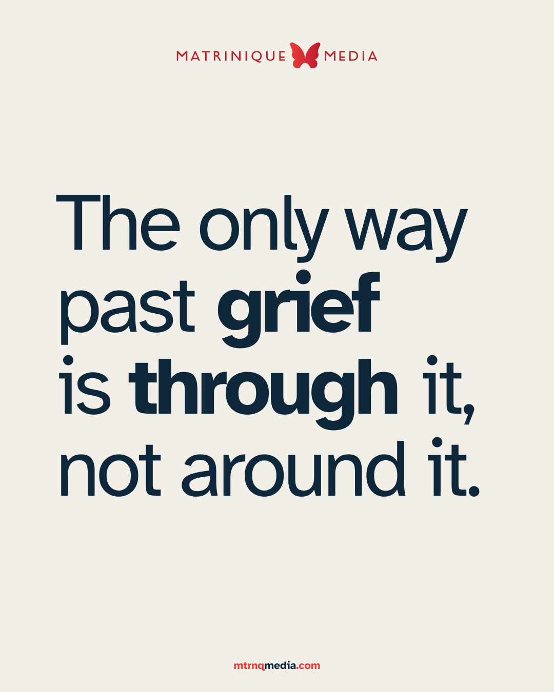
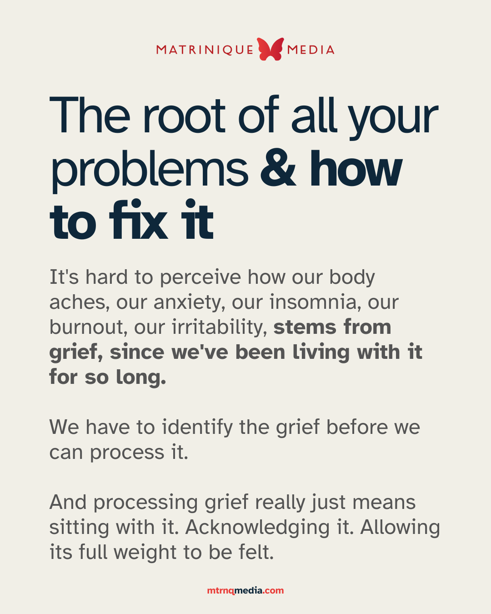
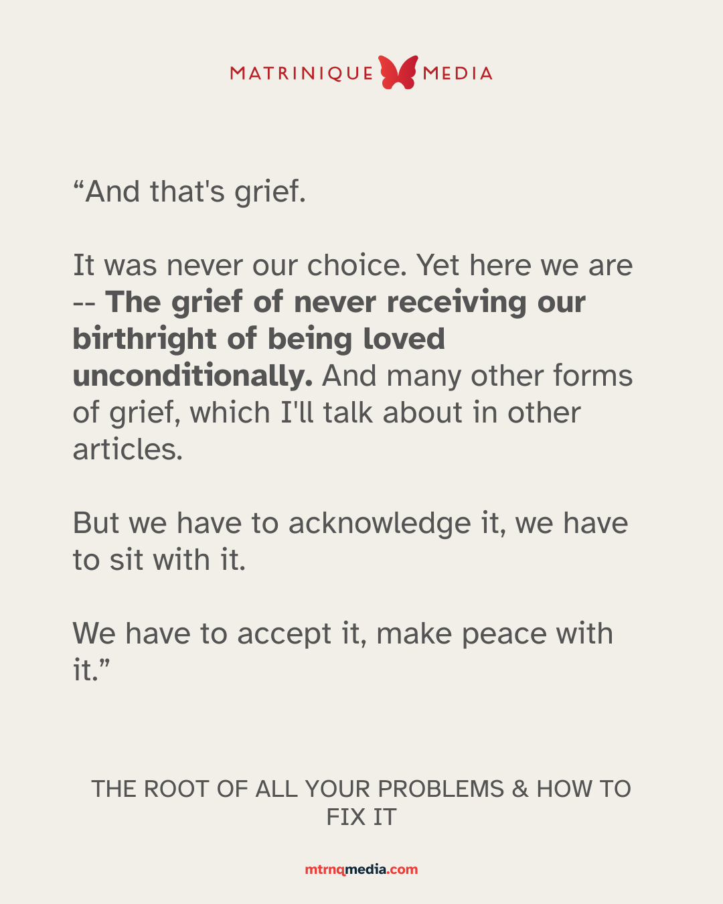

The Root Of All Your Problems & How To Fix It
Had difficulty naming this myself until just this morning (it is 5/3/2026), although a lot of what turned out to be positive turning points in my life involved a major, MAJOR acknowledgement of grief.
The first recognizable time was with my narcissistic not-really-boyfriend of… was it 9 years? After one of our many emotionally-draining hang-outs, I became convinced that he was a psychopath. So I started Googling psychopathy. Found out his pathology more closely matched narcissism, and that therapy wasn’t going to fix it.
There is no treatment for Narcissistic Personality Disorder (NPD).
It’s a personality disorder.
Key word: Personality. It’s their nature.
Dr. Ramani, a clinical psychologist I followed, likened attempts at “treatment” to stretching a rubber band. You can stretch it for however much you want, but when there’s any kind of crisis or pressure, when the chips are down and the character of that person is actually tested, and when their character choices at that moment actually matters, that rubber band will snap right back to its original, selfish, narcissistic shape.
That was, I think, the first time I was forced to face grief in the face.
It’s like I was told he had cancer. Which was a feeling I recognized because I had felt that feeling before, when I was told that my grandfather was already on stage 4.
Cancer would’ve been better.
If my not-really-boyfriend literally died, it would’ve been better than a narcissism diagnosis, because then it would feel less like his fault.
He’s alive right now, still hoovering me 4 years later, and I’m married.
He won’t change.
That was the grief at the time.
He won’t change.
He can’t change.
I couldn’t fully believe it. So I tried to be the better person. I tried making it work. I went back countless times, was disappointed countless times.
But at least, every time I went back, I was confronting grief.
I know I lost something. I lost a love that I wanted. I lost a future I envisioned. I lost a significant kind of faith in the fairness of the world.
They say “life is unfair” but we don’t really feel it until we look at the tragedy of the relationships we take for granted – the people closest to us.
Sometimes we are born to families that are narcissistic. We are born to parents who don’t love us. We are born to bad people. Yes, I will use the word “bad”; someone has to.
And that’s grief.
It was never our choice. Yet here we are – The grief of never receiving our birthright of being loved unconditionally. And many other forms of grief, which I’ll talk about in other articles.
But we have to acknowledge it, we have to sit with it.
Eventually, we will have to accept it, and make peace with it.
It’s not easy. For one thing, it’s hard to even recognize.
It’s hard to perceive how our body aches, our anxiety, our insomnia, our burnout, our irritability, stems from grief, since we’ve been living with it for so long.
We have to identify it before we can process it.
And then?
The only way past grief is through it, not around it.
That’s how to fix the root of all your problems: Go through the grief.
Exercise
-
What might you be grieving? (For example: a relationship, a loss of some kind, an unfortunate experience or circumstance)
-
What sad truth are you grieving?
-
Dig deeper. Is there another sad truth that is just so bad, you might be avoiding it?
Pins
If you don’t see any Pinterest pins above, that means Pinterest has banned my content from being shared. You can access all Visual Reminder cards by visiting my Pinterest page.


